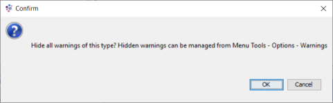
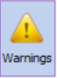
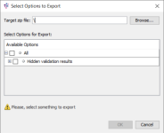

Hide warnings
Warning messages that are similar may be displayed in the Validation window a number of times. For ease, a user can hide warning messages for certain components by using the Hide warning option that is accessed by right clicking on an individual warning within the Validations window.
When a message for a component has been hidden, the Validation window will list at the top of the window the number of warning messages that have been hidden for this user.

The hidden messages can be restored by selecting the Restore check box found in the Warnings tab located in the Options dialog accessed from the Tools menu.
{kind=link}
| Warning messages that are hidden are not ignored, they may still cause deployments to fail even though they are not visible in the Validation window. |
| The type of Warning messages hidden in the Validation window is determined by user preferences. |
| Before installing a new version of the Studio, it is recommended that these user preferences are exported using Export accessed from the Options dialog. The user will then be able to use Import in the Options dialog to import these user preferences once the installation is complete. |
To hide a type of warning message
-
With the Validation window open, right click on the type of validation message you wish to hide from view in the Validation window.
-
Select Hide warning.
The system will display the following confirmation message:
{kind=link}
-
Click OK to hide all warnings of this type.
The message will close and the Validation window will list at the top of the window the number of warning messages that have been hidden.
Hidden warning messages can be restored within the Warnings tab of the Options dialog. In addition, the Hidden message settings can be shared with other users by exporting these as user preferences. This can be done using Export selected from the Options dialog. Other users can then use these settings by selecting Import from the Options dialog.
To restore a hidden warning message
-
Open the Options dialog by selecting the Tools menu followed by Options.
-
Select the Warning tab.
Each type of warning message that has been hidden will be listed. The message from which the Hide warning option was selected will be used to illustrate the type of message hidden. If there is a variable that is not consistent between messages, for example the Decision Process Flow name, then this variable will be highlighted in the message to illustrate it in the displayed message.
-
Next to the type of message that you wish to restore, select the Restore check box.
-
Click OK.
The dialog will close and the number of hidden messages displayed in the Validation window will be updated.
To export the hidden warnings user preferences
-
Open the Options dialog by selecting the Tools menu followed by Options.
-
Select the Warnings tab, by clicking on the Warnings icon.

{kind=link}
-
Select Export.
The system will display the Select Options to Export dialog.
-
Using the Browse button, specify the path for the target zip.
-
Type a name for the zip file.
-
Using the checkboxes to select the specific warning type you wish to export.
{kind=link}
| The OK button will not become active unless a name and path for the zip file has been defined along with some selections. |
-
Click OK.
The dialog will close and a zip file containing the Hidden warnings user preferences will be created.
To import the hidden warnings user preferences
-
Open the Options dialog by selecting the Tools menu followed by Options.
-
Select the Warning tab.
-
Select Import.
The system will display the Select Options to Import dialog. -
Next to the Import Source field, use Browse to locate the required zip file.
-
Within the Select Options for Import area, select the Hidden validation results checkbox.
-
Click OK.
The dialog will close and the hidden messages displayed in the Validation window will be updated.